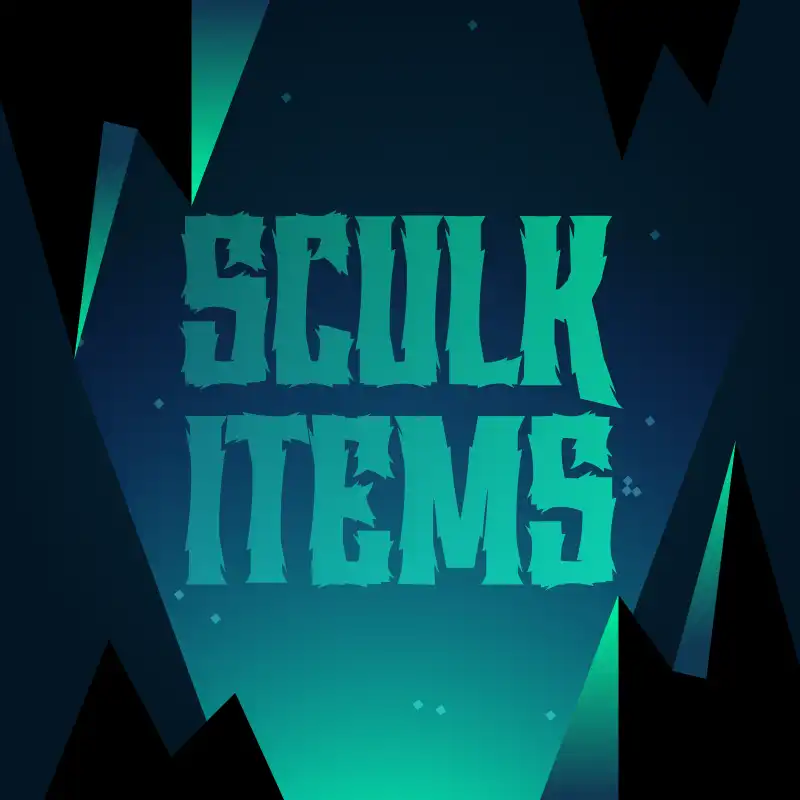

Mods

Infinity Rework
Reworks and balances the Infinity enchantment by splitting it into three tiers with each tier lowering the chance of consuming an arrow and allowing bows to be enchanted with both Infinity and Mending. Every feature is fully configurable.
Rail Destinations
Fabric port of the RailSwitch plugin used on the CivMC server that allows rails to automatically switch directions based on a specified destination.
No XP Anvils
Removes the XP cost for repairing, renaming and applying enchantments to tools and gear in an anvil.
Bleached
Adds bleach which can be used to return wool, carpet, beds, banners and leather armour to their original colours.

Sculk Items
Sculk Items is a work in progress mod for fabric that adds more items to Ancient Cities to make them worth exploring.